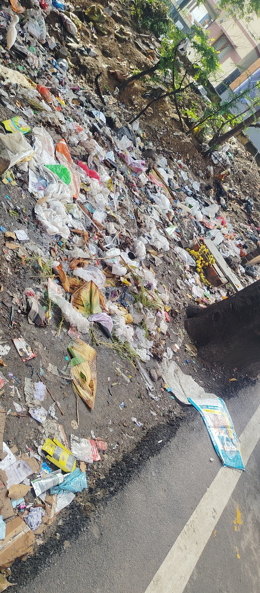
Roadside mixed-waste dumpOriginal upload · 1000107096.jpgTap image to zoom · Open gallery
A practical visual learning guide using the uploaded litter photographs: identify visible objects, distinguish rigid plastics from films and multilayer wrappers, understand resin identification codes, and learn how to mark objects with square boxes and numbered tags.
Items that keep their shape, such as caps, tubs, cups and hard fragments. Record the object type first; resin code second.
CapsContainersRigid fragmentsThin bags, films and wrappers that bend or fold easily. Many are PE films, but printed or laminated packs may be composite structures.
Carry bagsFilmSachetsPrinted snack and sachet packaging can combine plastic layers, aluminium and/or paper. Do not force these into one resin code based on appearance.
Snack wrappersLaminatesLeaves, soil, stones, wood, paper and cardboard should be separated from plastic categories rather than given plastic resin codes.
OrganicPaperInert debrisThese codes identify common resin families. The code is not a guarantee that an item is accepted by a local recycling programme.
| Code | Polymer | Common examples | Visual sorting note |
|---|---|---|---|
| #2 | HDPE – High-density polyethylene | Some bottle bodies, detergent containers, rigid household packaging and some caps | Look for the moulded “2” / HDPE mark. Appearance alone is not enough. |
| #4 | LDPE – Low-density polyethylene | Many flexible films, bags and liners | Flexible film may be PE, but a printed laminate may be multilayer. |
| #5 | PP – Polypropylene | Some caps, tubs, food containers and woven sacks | Rigid caps can be PP, but some are HDPE. Verify the moulded code. |
| #6 | PS – Polystyrene | Some disposable cups, trays and foam packaging | Do not classify every white foam-like item as PS without confirmation. |
| Other codes | PET #1, PVC #3, Other #7 | Beverage bottles, pipes/blisters, mixed or specialty materials | Record “unknown / other” if the mark cannot be read. |
These are the source photographs included in this study pack. Use them to practise spotting objects before looking at the annotated examples.

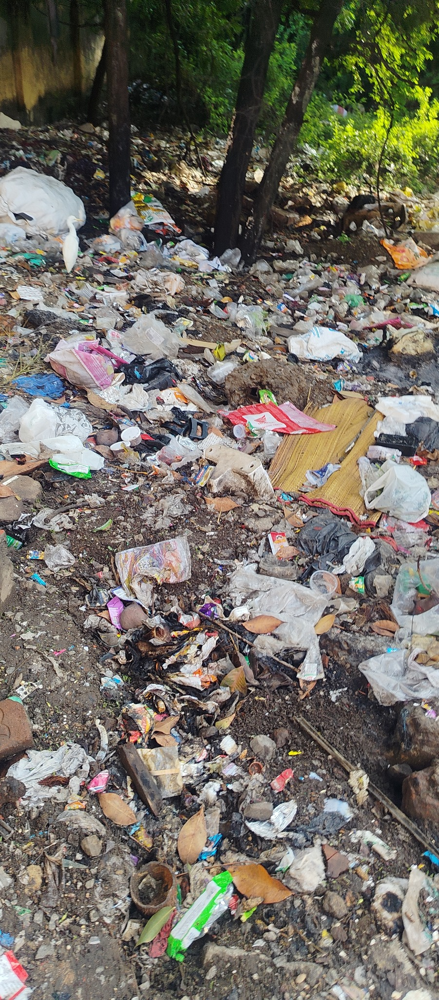
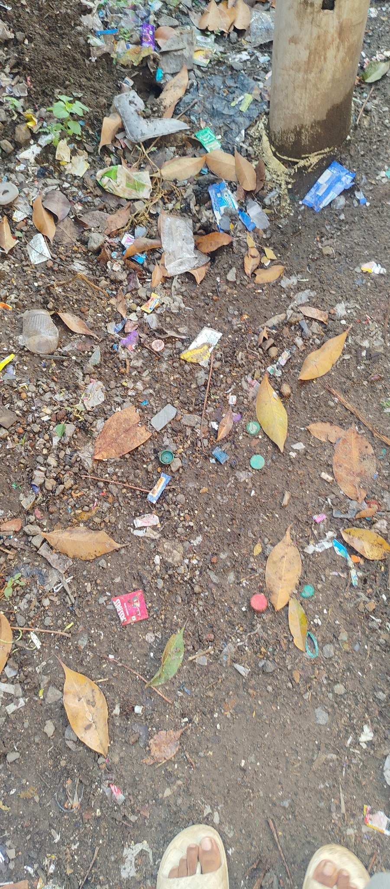
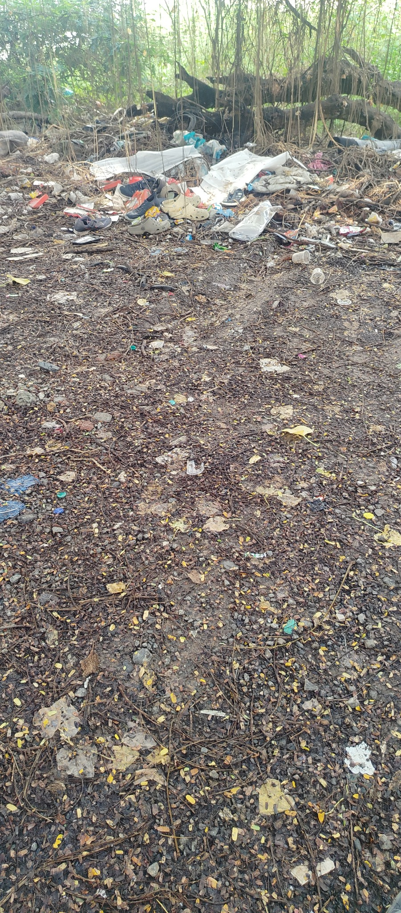
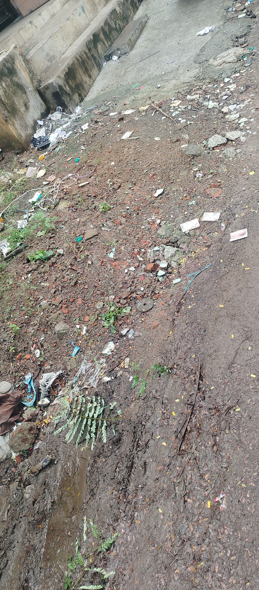
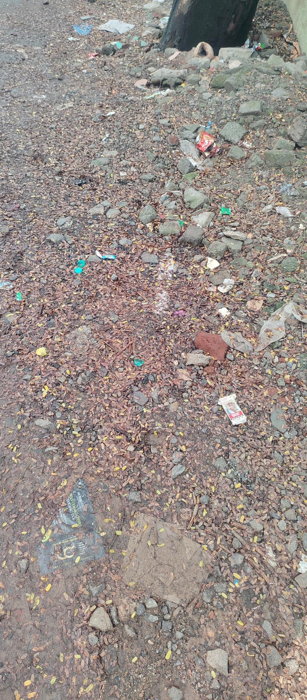
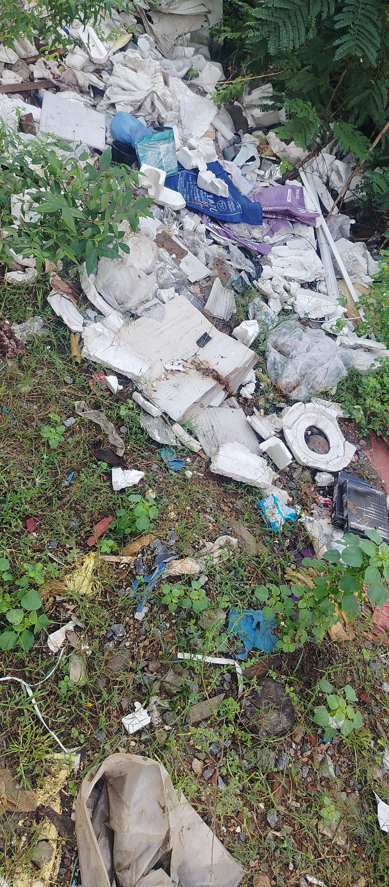
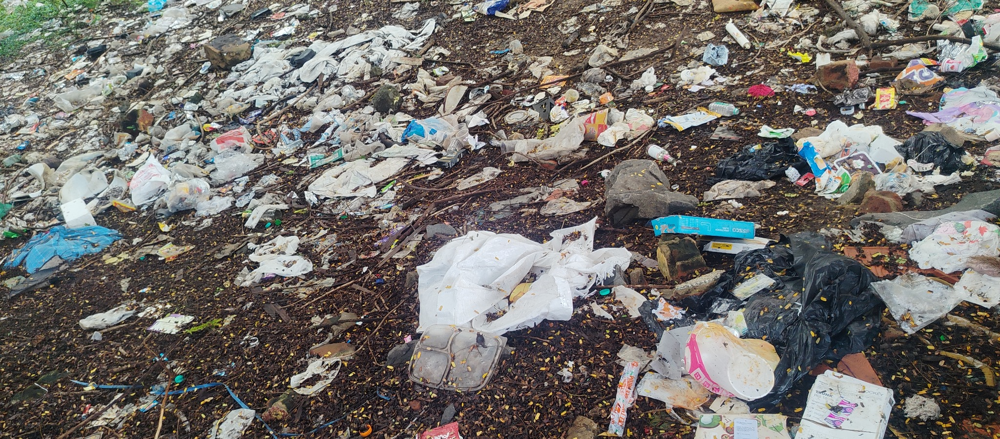
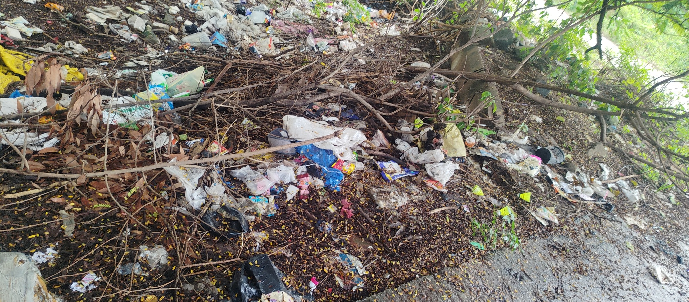
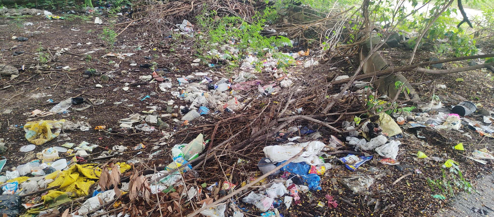
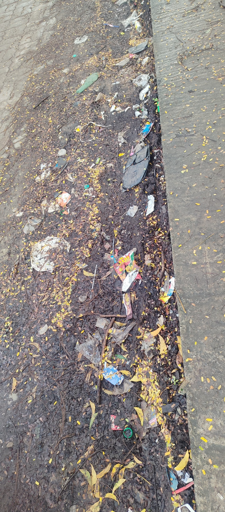
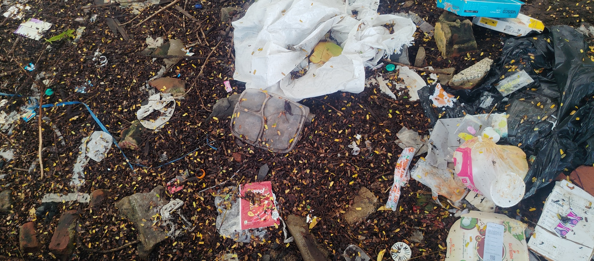
Annotated examples use boxes, callouts or numbered tags. Some are earlier visual callout versions; use the legend in each image and treat polymer assignments as provisional.
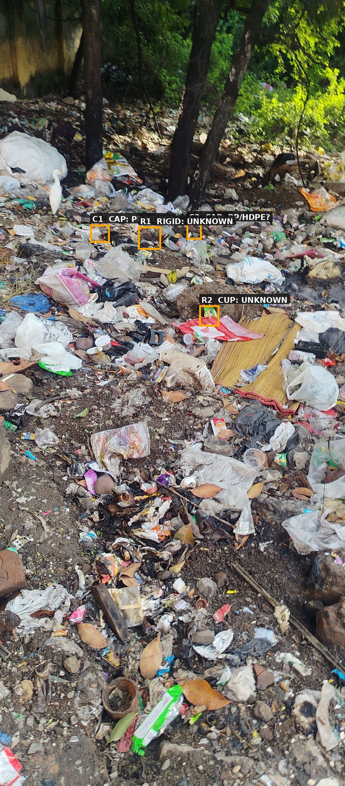
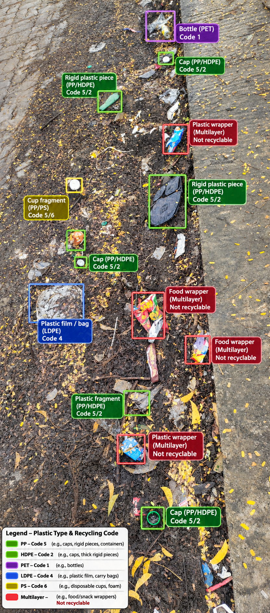
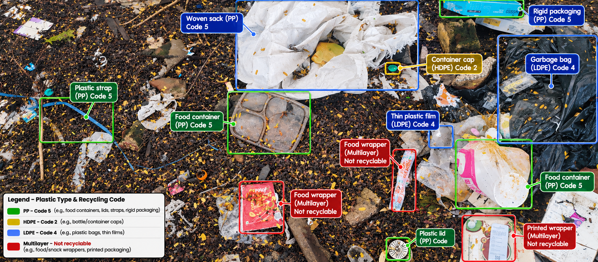
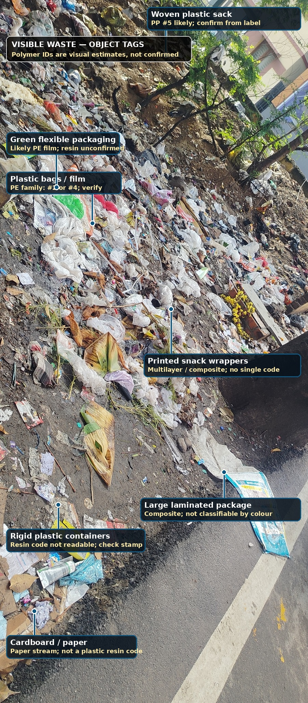
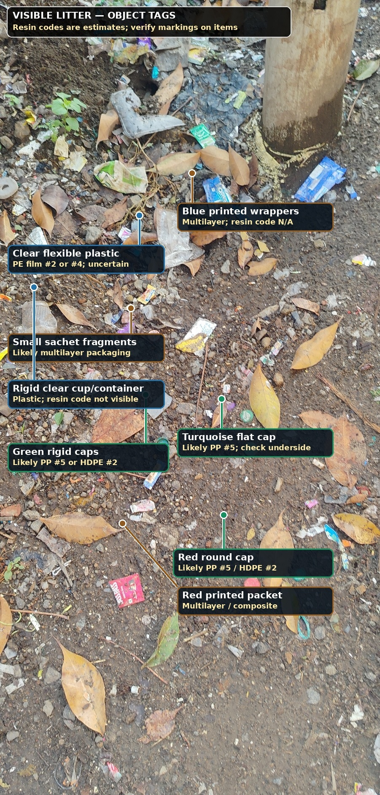
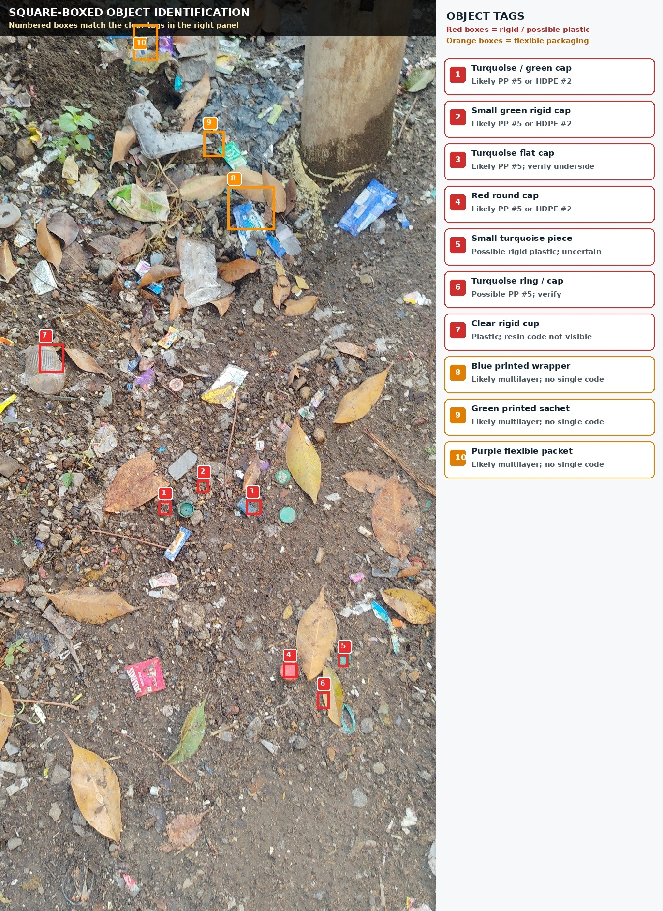
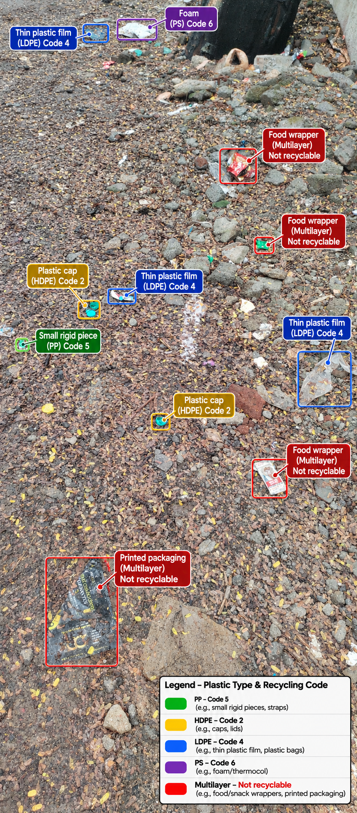
| Field | What to enter | Example |
|---|---|---|
| Photo ID | Unique image reference | IMG-001 |
| Object ID | Number shown on the box | 03 |
| Visible object | Plain-language description | Turquoise rigid cap |
| Form | Rigid / flexible / foam / composite / non-plastic | Rigid |
| Possible material | PP / HDPE / PE film / multilayer / unknown | PP or HDPE |
| RIC code | Code only if confirmed; otherwise candidate | Candidate #5; verify |
| Evidence | Embossed mark, label, product info or test | No visible mark |
| Confidence | Confirmed / likely / possible / unknown | Possible |
| Action | Separate / inspect / send for material check | Inspect underside |
Choose an answer and check your understanding.